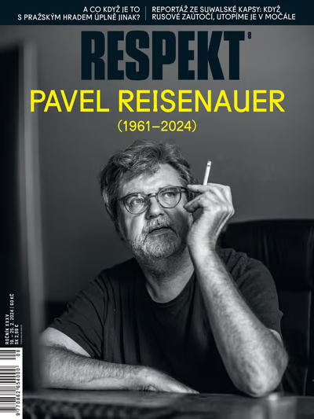

Nepodařilo se obnovit data
Zobrazujeme poslední stažený obsah.
Buďte v obraze. Informační servis Respektu
Všechny zprávy
{{ n.time }}
{{ n.text }}
Odebírejte denní novinky e-mailem
Nové články do vaší schránky, každý všední den v 17 hodin.
Přihlášením se k odběru souhlasíte se zpracováním osobních dat.
↓ Inzerce
{{ varyEyebrow }}
{{ varyTitle }}
{{ varyCount }}
Podcasty
Zobrazit vše
{{ p.series }}
{{ p.title }}
Všechny články
Nepřečtené ({{ unreadCount }})

Respekt Obchod
Vrbětice
Hledat
Hledá se automaticky ve všech textech vč. archivu od roku 1990.
Filtrovat výsledky
Autor
Rubrika
Rok vydání
{{ resultCountLabel }}
podle relevance
/
podle data sestupně
{{ r.title }}
{{ r.perex }}
{{ r.meta }}
{{ r.dateLine }}
Načítání dalších výsledků…
Nic jsme nenašli. Zkuste jiné klíčové slovo.
Mohlo by vás zajímat
Nejčtenější
Podcastové série
Rubriky
Téma
13. 7. 2026
15 minut
{{ articleTitle }}
Zdánlivě dokonalé léky proti obezitě proměňují naše těla a svět. Nemusí to nutně být k lepšímu.
Clara Zanga, Petr Horký
Vyjde v tištěném vydání 14. 7.
- Léky GLP-1 mění těla milionů lidí a s nimi celá odvětví — od potravin po módu.
- Dlouhodobá data chybí; po vysazení se váha většinou vrací.
- Otázka nezní, jestli fungují, ale co udělají se společností.
Souhrn připravila redakce s pomocí AI · Číst celý článek níže
Léky, které původně vznikly pro diabetiky, dnes mění životy milionů lidí s obezitou — a s nimi i potravinářský průmysl, módu a představy o vůli. Otázka už nezní, jestli fungují, ale co s námi udělá svět, ve kterém je hubnutí otázkou injekce.
Jenže dlouhodobá data teprve vznikají a lékaři upozorňují, že s vysazením léku se váha většinou vrací. Vzniká tak generace pacientů, kteří…
Dočetli jste ukázku
Celý článek a všechen obsah Respektu odemkne digitální předplatné.
Předplatné funguje v aplikaci i na webu. Kdykoli zrušíte.
Jenže dlouhodobá data teprve vznikají a lékaři upozorňují, že s vysazením léku se váha většinou vrací. Vzniká tak generace pacientů, kteří budou injekce potřebovat celý život — a farmaceutické firmy to vědí.
Hubnutí přestalo být otázkou vůle. Stalo se otázkou předpisu.
A s tím přichází nová nerovnost: mezi těmi, kdo si injekci dovolí, a těmi, na které zbyde starý svět diet a výčitek.
Odkaz se otevře přímo v aplikaci
Poslech
Podcastové série
Zobrazit vše
Podcast
{{ se.title }}
{{ se.meta }}
Nové díly
Podcast
{{ pe.title }}
{{ pe.meta }}
Nové audiočlánky
Audiočlánek
{{ aa.title }}
{{ aa.meta }}
Uložené k poslechu
Vaše fronta
{{ ut.type }}
{{ ut.title }}
{{ ut.meta }}
Stažené stopy
K poslechu offline
{{ dt.type }}
{{ dt.title }}
{{ dt.meta }} · staženo
Zatím nic staženého — použijte šipku u stopy ve frontě.
9:41
100
{{ trackTitle }}
Výtah Respektu • 21 min
12:34
-9:12
Tento text načetl robotický hlas.
Vaše fronta ({{ queueCount }})
Co se má přehrávat dál a v jaké frontě?
Nyní si můžete sami přidávat podcasty a audioverze článků do fronty přes možnosti článků a audia.
Další z {{ contextLabel }}
{{ autoContinueHint }}
Automatické pokračování je vypnuté — po dohrání fronty se přehrávání zastaví. Zapnete v Nastavení → Poslech.
Uspávání přehrávání
Rychlost přehrávání
{{ speedBig }}
Táhněte pro plynulé nastavení, klepnutím zvolíte krok
Vydání
Aktuální číslo
Respekt 31/2026
26. července · Proč jsou Slováci tak vtipní?
Stahuje se pro čtení offline…{{ dlPct }} %
V tomto čísle
{{ i.eyebrow }}
{{ i.title }}
{{ i.meta }}
Starší vydání
Od roku 1990
Speciály
Mimo týdenní řadu
Stažená vydání
Ke čtení offline
Respekt 29/2026
13.–19. července · 68 MB · staženo
Respekt 28/2026
6.–12. července · 64 MB · staženo
Žádná stažená vydání — stáhněte je v Archivu tlačítkem „Stáhnout offline“.
Nová vydání se stahují automaticky na Wi-Fi. Spravovat v Nastavení.
Uložené
Dostupné offline
2 vydání a 6 článků · 182 MB
Automaticky stahovat nová vydání na Wi-Fi
Můj účet
JK
Jana Konečná
Digitální předplatné · do 3. 2. 2027
Aplikace
Poslech
Pokračovat dalším obsahem
Po dohrání fronty přehraje další obsah z Titulky, Uložených apod. Vypněte pro poslech jen jedné stopy.
CarPlay
Připravujeme — zatím jen náhled přepínače.
Odběr newsletterů
{{ nl.label }}
{{ nl.sub }}
Upozornění — témata
{{ t.label }}
Upozornění — sledovaní autoři
{{ au.label }}
Frekvence notifikací
Pokud povolení odmítnete, znovu se zeptáme nejdřív za 90 dní — žádné opakované dialogy.
Čtení
Vzhled
Velikost písma
Náhled: Aa
A
A
Verze 9.0.0 (prototyp) · Ochrana soukromí · Licence
Rubriky
Další
{{ trackSheetTitle }}
{{ trackSheetMeta }}
Podržte ikonku play déle a přehraje se hned.
Poslechnout článek · 8 min
Fronta se přehraje ve zvoleném sledu, pozice se ukládá.
Líbí se vám Respekt v novém?
Ptáme se jen jednou za čas. Vaše odpověď nám pomůže rozhodnout, co dál.
To rádi slyšíme!
Pomohlo by nám hodnocení v obchodě s aplikacemi — ostatním čtenářům ukáže, že za to stojíme. Zabere to pár vteřin.
Otevře se systémové okno App Store / Google Play.
Co bychom měli zlepšit?
Odpověď jde přímo redakci a vývojářům, ne do obchodu.
S odpovědí odešleme: aplikace 9.0.0 · iOS 19.1 · iPhone 15 Pro · Jana K. (digitální předplatné). Pomůže nám to problém dohledat.
Děkujeme za upřímnost
Vaši zpětnou vazbu jsme uložili. Pokud najdeme řešení, dáme vám vědět.
{{ toast }}
Prototyp aplikace — co je nové
Reaguje na audit (07/2026) a průzkum předplatitelů (N = 2 139). Kliknutím přejdete na obrazovku.